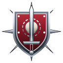
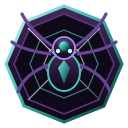
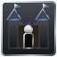

Объёмная дизайн-система · Орден Последнего Света (Серебро и Сталь) и Нерубы (Обсидиан и Хитин)


Последнее поселение. Сохраните Цитадель, восстановите оборону и остановите выводок у Пепельного брода.
Загрузка…
Старт: 6 рабочих, 3 Мечника, 2 Арбалетчика, 1 Жрец; 500 эссенции и 200 древесины. Цитадель, Казармы, Часовня и сторожевая башня готовы; восточная башня заложена. Нерубы имеют базу, рабочих, гарнизон и действуют обычным ИИ. Характеристики фракций не изменены.
Те же приказы, что на поле: выберите отряд и цель. Координаты — клетки карты (0–95, 0–71).
Будет засчитано поражение. Случайный клик не завершит игру.